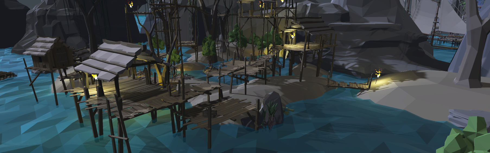

IrishJohnGames and I came up with the core mechanics together going back and forth on what was possible and fun. The main quest is finding the treasure. In the game Spookz chase you through the island and you have a handful of ways of defending yourself. A torch that acts as a shield but only lasts a few blasts and for a limited amount of time, rum that increases your courage and safe ground where Spookz cannot hurt you. Even tho there is only a few mechanics we managed to blend them together into a fun and fast experiance. I created a level with few distinct zones and varying degrees of difficulty and it was satisfying seeing players change their strategy depending on which defence they had at hand. To see how it flows, it is best to play the game yourself or watch someone else play it.
Curse of the spookz
play on itch.io
Game submitted to the Messy Game Jam where it won first place.
IrishJohnGames and I came up with the core mechanics together going back and forth on what was possible and fun. The main quest is finding the treasure. In the game Spookz chase you through the island and you have a handful of ways of defending yourself. A torch that acts as a shield but only lasts a few blasts and for a limited amount of time, rum that increases your courage and safe ground where Spookz cannot hurt you. Even tho there is only a few mechanics we managed to blend them together into a fun and fast experiance. I created a level with few distinct zones and varying degrees of difficulty and it was satisfying seeing players change their strategy depending on which defence they had at hand. To see how it flows, it is best to play the game yourself or watch someone else play it.
ENGINE : Unity
TEAM MEMBERS : IRISHJOHNGAMES, MELITA
MY ROLE ON THE PROJECT : LEVEL DESIGN